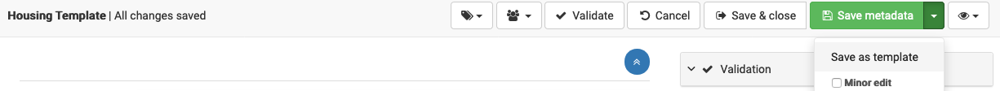
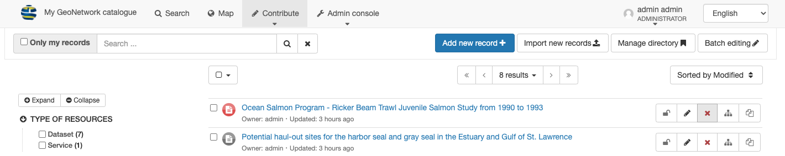

Create¶
Create Record¶
To create a new record navigate to .
Click the Add new record button.

Editor board¶
Note
The contribute menu requires editor permission, talk to your administrator if you require increased access.
Using the Add a new record screen to select a template for your new record, and use Create.

Add a new record¶
Duplicate record¶
To create a new record navigate to .
Editor board¶
Note
The contribute menu requires editor permission, talk to your administrator if you require increased access.
Locate a record to duplicate, and use the Duplicate button (at the far right of the record actions row).

Record duplicate¶
Double check the Add a new record options and use Create to duplicate the record.

Add a new record¶
The new record is opened in the editor.
The new record is generated with a generated identifier and title to avoid conflict with the original.

Metadata editor showing duplicate record¶
Create Template¶
Templates are used as a start point for the creation of new records, and do not appear as part of search results.
To create a template:
Choose an example record to start from and duplicate the record as shown in the previous section.
Update the title to be clear this is a template.
When saving a record you use the drop down arrow to select Save as template
Save as template¶
Delete Record¶
To delete a new record navigate to .
Editor board¶
Note
The contribute menu requires editor permission, talk to your administrator if you require increased access.
Locate record to delete, and use the Delete button in the record actions.
Record delete¶
Confirm removing the record.

Record delete confirmation¶